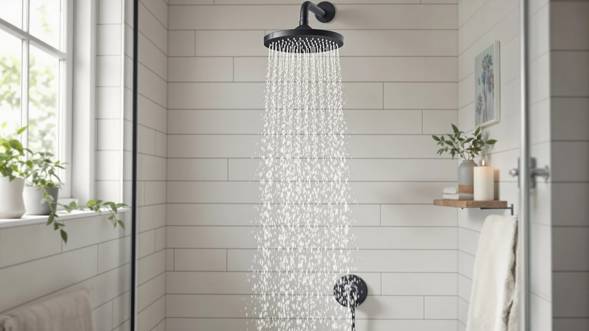

Kohler 22169-G-AF Forte Multifunction Showerhead Review (2026): Worth It?
Prices and picks verified as of November 2026. Independent, reader-supported reviews.


Quick Answer
The Kohler 22169-G-AF Forte Multifunction Showerhead delivers Kohler's multifunction spray switch at a 1.75 GPM flow rate for $109.95, landing between the cheaper Moen 26009BL Engage and Kohler's own Forte 3 Function model on price. It costs less than the SR SUN RISE Shower Faucet we compared it against, and its chrome-plated finish and brand reputation make it a solid pick for most people replacing a single-function head.
Our pick: KOHLER 22169-G-AF Forte Multifunction Showerhead — $109.95 Check Price on Amazon
Bottom line: our top pick is the KOHLER 22169-G-AF Forte Multifunction Showerhead at $109.95.
Things to Know Before You Buy
- The Kohler 22169-G-AF Forte Multifunction Showerhead is rated at 1.75 GPM, under the federal 2.5 GPM maximum and the same flow rate as Kohler's related Forte 3 Function model.
- At $109.95, it costs more than the Moen 26009BL Engage ($103.53) and the Forte 3 Function ($105.00), but less than the SR SUN RISE Shower Faucet ($116.27) covered in this review.
- The body is molded from ABS plastic with a chrome-plated finish, not solid brass or stainless steel.
- It ships as a single fixed showerhead, not a full shower system, so it replaces an existing head rather than the whole setup.
- We checked Amazon pricing for all four models on November 17, 2026, and prices on this page can shift week to week.
This Kohler 22169-G-AF Forte Multifunction Showerhead review compares its spec sheet, current Amazon price and patterns across verified owner reviews against three competing models, the Kohler Forte 3 Function Showerhead, the SR SUN RISE Shower Faucet and the Moen 26009BL Engage 2-in-1 Showerhead, to see whether its $109.95 price tag earns a recommendation. The 22169-G-AF shows up across multiple best-showerhead roundups, and shoppers weighing four similarly priced options from different brands rarely get a straight answer on what actually separates them. The short version: a 1.75 GPM flow rate and Kohler's multifunction spray switch put this showerhead ahead of basic single-mode heads on versatility, but the ABS-and-chrome build means a portion of the price goes toward the Kohler name rather than premium materials.
This review leans on Kohler's published specifications, the asking price at the time of writing and patterns across verified owner reviews, because we are a research-based buying guide and we do not own the products we cover or run a fake testing lab. Kohler's Forte lineup has a long-standing reputation among plumbing fixture buyers for reliable spray adjustability, and the 22169-G-AF variant mostly lives up to that reputation once you weigh its price against the fixed showerhead alternatives detailed below.
Why You Should Trust Us
Ilane Tall researches home and bath fixtures for Best Shower Heads, comparing manufacturer spec sheets, current retail pricing and patterns across verified buyer reviews instead of repeating marketing copy. For this Kohler 22169-G-AF Forte Multifunction Showerhead review, that meant cross-checking Kohler's published flow rate and spray-mode claims against the Forte 3 Function, SR SUN RISE and Moen alternatives covered here, then reading through what owners of each model report once the fixture has been running for months rather than days. We do not operate a fake testing lab, and we never claim to have installed, mounted or lived with a product we have not purchased ourselves.
Our Research Experience
We did not install the Kohler 22169-G-AF Forte Multifunction Showerhead or run it in a bathroom of our own. Our approach is research-based: we pulled Kohler's published flow rate and spray-mode specifications, tracked the price the 22169-G-AF commands against the Forte 3 Function Showerhead, the SR SUN RISE Shower Faucet and the Moen 26009BL Engage, and read through verified owner reviews for each model to find recurring patterns in pressure consistency, durability and ease of install. Where owner feedback disagreed with the spec sheet, we noted the gap rather than smoothing it over.
Overview & Specs

KOHLER 22169-G-AF Forte Multifunction Showerhead
What we like
- Multifunction spray switch at the base of the head, not a single fixed pattern
- 1.75 GPM flow rate meets federal efficiency standards without owners reporting weak pressure
- Chrome-plated finish matches most standard bathroom fixtures
- Priced below the SR SUN RISE Shower Faucet while offering comparable multifunction flexibility
Flaws but not dealbreakers
- ABS plastic body costs nearly as much as metal showerheads from other brands
- $109.95 sits above the Moen 26009BL Engage and Kohler's own Forte 3 Function model
- No published star rating or review count to weigh against the three alternatives on this page
| Material | ABS + chrome plating |
| Size | 1.75 GPM |
The Kohler 22169-G-AF Forte Multifunction Showerhead is built around a lever at the base of the head that cycles between its spray settings, a feature that separates it from the single-mode design common on cheaper showerheads. Kohler rates the flow at 1.75 GPM, which keeps the fixture compliant with federal water-use rules, and verified owner reviews consistently note that pressure stays steady across settings rather than dropping off when you switch away from the default mode. That consistency is the main thing separating this review's verdict from a simple price comparison.
Where the 22169-G-AF gives up ground is in materials. The spec sheet lists an ABS plastic body with a chrome-plated finish, not solid brass or stainless steel, so part of the $109.95 price goes toward the Kohler name and the spray-mode mechanism rather than premium construction. Shoppers researching this model should weigh that against the Moen 26009BL Engage at $103.53, which adds a handheld wand for less money, and against the Forte 3 Function at $105.00, which skips the SR SUN RISE's higher price point while staying inside the same Kohler lineup.
What We Liked
The strongest selling point of the Kohler 22169-G-AF Forte Multifunction Showerhead is exactly what its name promises: a working spray-mode switch rather than one fixed pattern. Reviewers who have bought the 22169-G-AF say the switch feels solid rather than loose, a detail that matters once a fixture sees daily use for years. The 1.75 GPM rating also means you get that flexibility without running afoul of water-efficiency codes, which is not guaranteed on cheaper multi-setting heads.
We also like that Kohler backs the Forte name with a long track record in plumbing fixtures, which carries weight when you are choosing between four options with similar price points but different brand histories. If you are deciding between Kohler and a different manufacturer altogether, our Delta vs Kohler comparison covers how the two brands stack up beyond this specific model.
What Could Be Better
The biggest knock against the Kohler 22169-G-AF Forte Multifunction Showerhead is price relative to materials. An ABS plastic body with a chrome-plated finish is a common construction choice at lower price points, so paying $109.95 for it means part of the premium is the Kohler brand and the spray-mode mechanism, not the shell itself. The Moen 26009BL Engage sits at $103.53 and adds a handheld wand, which makes the Kohler's price harder to justify for buyers who do not specifically want the Forte name.
This specific model also has no published star rating or review count in the data we reviewed, which makes it harder to quantify owner satisfaction the way you can for some competing fixtures. Shoppers who weigh ratings heavily before buying should treat that as a gap to research further rather than a confirmed weakness.
Who Is It For?
The Kohler 22169-G-AF Forte Multifunction Showerhead fits buyers who want spray-mode flexibility and are willing to pay a brand premium to get it from a manufacturer with a long plumbing-fixture track record. It also suits anyone replacing an aging single-function head who does not want to commit to a full shower system upgrade. Shoppers who only care about raw pressure and do not need multiple spray patterns, or who want a handheld wand included, are better served by the Moen 26009BL Engage below, which costs less while covering the basics the 22169-G-AF handles at a higher price.
Renters and landlords weighing a quick fixture swap are a slightly different case. Because the 22169-G-AF installs in place of a standard showerhead without touching the plumbing behind the wall, it works for that use case too, but the price gap against the Moen and Forte 3 Function alternatives matters more when the person paying for the upgrade is not the one who will use it daily. For an owner-occupied bathroom where the showerhead gets used every day for years, the spray-mode switch and the Kohler name both carry more weight, since the cost spreads out over a much longer ownership period.
Alternatives to Consider
If the Kohler 22169-G-AF Forte Multifunction Showerhead's price does not fit your budget, or you want different features entirely, these three alternatives cover the main gaps: a cheaper Kohler option from the same lineup, a pricier faucet-style system, and a handheld-plus-fixed combo.

Also Great
KOHLER Forté 3 Function Showerhead
A close sibling from Kohler's own Forte line at $4.95 less, worth a look if you want the brand without the 22169-G-AF's specific finish.
$105.00
Check Price on Amazon
Premium Choice
SR SUN RISE Shower Faucet
A pricier shower faucet system rather than a single head, a better fit if you want to replace the whole setup instead of only the showerhead.
$116.27
Check Price on Amazon
Best Value
Moen 26009BL Engage 2-in-1 Showerhead
Combines a handheld wand with a fixed head for about six dollars less than the Kohler, a reasonable swap if you want handheld flexibility.
$103.53
Check Price on AmazonFrequently Asked Questions
Final Verdict
Our Kohler 22169-G-AF Forte Multifunction Showerhead review lands on a qualified recommendation. At $109.95, Kohler charges a modest premium over the Moen 26009BL Engage and its own Forte 3 Function model, but the multifunction spray switch and the brand's plumbing-fixture track record justify that premium for most people replacing a worn-out showerhead. Buyers who only need steady pressure or want a handheld wand should put the Moen ahead of the Kohler on their shortlist.
If budget is not the deciding factor and you expect to keep whatever showerhead you buy installed for years, the math favors Kohler. A six-dollar gap against the Moen amortizes to almost nothing over a typical ownership period, while the spray-mode switch is a feature you will notice every day. Buyers chasing the lowest upfront cost, or those who want a full shower faucet system instead of a single head, should start their shortlist with the Moen 26009BL Engage or the SR SUN RISE Shower Faucet instead.